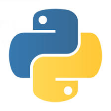

|  |
Пример резюме
Python-разработчика |
ИМЯ ФАМИЛИЯ
Связаться со мной
ОБО МНЕ
Python-разработчик с X лет опыта в разработке веб-приложений, автоматизации и интеграции API.
Специализируюсь на Django, Flask, FastAPI, а также на работе с базами данных и обработке данных.
Имею опыт создания чат-ботов, работы с Docker и DevOps-инструментами.
ТЕХНИЧЕСКИЕ НАВЫКИ
- Языки программирования:
| Python (Django, Flask, FastAPI) |
⭐️⭐️⭐️⭐️⭐ |
| JavaScript (Vue.js, React) |
⭐️⭐️⭐️⭐️⭐ |
- Базы данных: PostgresSQL, MySQL, SQLite, Redis ⭐️⭐️⭐️⭐️⭐️
- API и интеграции: REST, GraphQL, OAuth, WebSockets ⭐️⭐️⭐️⭐️️
- Инструменты и технологии: Docker, Celery, Redis, RabbitMQ, Git, Linux ⭐️⭐️⭐️⭐️
- Тестирование: Pytest, Unittest ⭐️⭐️⭐️⭐️⭐️
- Облачные технологии: AWS, DigitalOcean, Heroku ⭐️⭐️⭐️⭐️
- CI/CD: GitHub Actions, GitLab CI/CD ⭐️⭐️⭐️⭐️⭐️
ОПЫТ РАБОТЫ
Python-разработчик | [Название компании] (ММ.ГГГГ – настоящее время)
📍 Город, Страна
- Разработка и поддержка веб-приложений на Django и FastAPI
- Интеграция с внешними API (например, платежные системы, CRM, Telegram API)
- Разработка и развертывание Docker-контейнеров
- Оптимизация SQL-запросов и работа с ORM
- Настройка CI/CD пайплайнов для автоматического деплоя
Python-разработчик | [Название компании] (ММ.ГГГГ – настоящее время)
📍 Город, Страна
- Разработка чат-ботов для Telegram и WhatsApp
- Автоматизация бизнес-процессов с помощью Python-скриптов
- Настройка мониторинга и логирования с Prometheus и Grafana
- Оптимизация производительности веб-приложений
ОБРАЗОВАНИЕ
[Название университета] – [Специальность] (Годы обучения)
📍 Город, Страна
Дополнительные курсы:
- Python-разработка ([Название курса], [Год])
- Веб-разработка на Django ([Название курса], [Год])
- DevOps и CI/CD ([Название курса], [Год])
ДОПОЛНИТЕЛЬНАЯ ИНФОРМАЦИЯ
- Активно участвую в Open Source проектах
- Веду технический блог / Telegram-канал о программировании
- Говорю на [языки] (например, русский, английский)
📌 Готов к удаленной работе и переезду